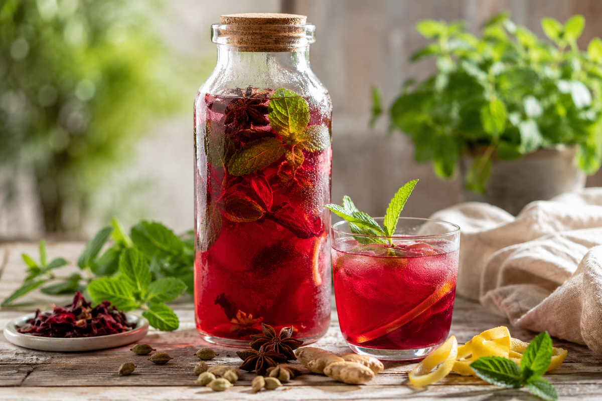

Mi infusión favorita para el verano

En verano siempre tengo una botella de esta infusión esperándome en la nevera.
Hace años me di cuenta de que me costaba beber suficiente agua cuando hacía calor. Desde entonces preparo estas infusiones frías casi a diario y, sin darme cuenta, termino bebiendo dos o tres litros a lo largo del día.
Es uno de esos pequeños hábitos que más ha cambiado mi bienestar.
Mi mezcla de hoy
- 1 litro de agua
- 2 cucharadas de hibisco
- 5 o 6 ramas de hierbabuena fresca
- 5 vainas de cardamomo ligeramente machacadas
- 2 estrellas de anís estrellado
- Un trocito de jengibre fresco
- La piel de medio limón ecológico
Y ahora viene mi parte favorita: atrévete a jugar con tus ingredientes favoritos o con los que tengas en la despensa. Unas rodajas de naranja, melocotón, lima, frutos rojos, una rama de canela, romero, lavanda… Cada combinación crea una infusión diferente y hace que nunca te aburras de beber agua.
Preparación
- Lleva el agua a ebullición.
- Añade el hibisco, la hierbabuena, el cardamomo, el anís estrellado, el jengibre y la piel de limón.
- Apaga el fuego y deja infusionar entre 10 y 15 minutos.
- Cuela la infusión y deja que se enfríe.
- Guárdala en una botella de cristal en la nevera y sírvela bien fría.
¿Por qué siempre vuelvo a ella?
Porque hidratarme deja de ser una obligación y se convierte en un placer.
Cuando tengo una botella preparada en la nevera, bebo mucho más agua casi sin darme cuenta. Me acompaña mientras trabajo, cuando leo, cuando escribo o simplemente cuando necesito hacer una pausa.
El hibisco aporta un sabor fresco y ligeramente ácido. La hierbabuena refresca, el cardamomo añade un aroma cítrico y especiado que me encanta, y el anís estrellado deja un fondo dulce muy sutil que hace que cada vaso invite al siguiente.
A veces pensamos que cuidarnos requiere grandes cambios.
Yo he descubierto que, en muchas ocasiones, basta con tener una botella bonita esperándote en la nevera.